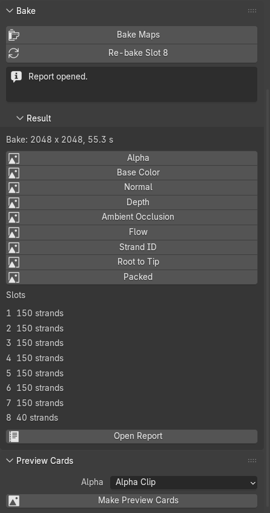

Tressmap quick start
Installing Tressmap and your first bake. The full manual, README.md, is inside the download. Back to the Tressmap product page.
Install (Blender 4.2 LTS to 5.3; tested on 4.2.23, 4.5.16, 5.2.4 and 5.3.0)
- After checkout, download
tressmap-1.0.1.zipfrom the link in Polar's email. Install the zip itself; do not unpack it first. - In Blender, open Edit > Preferences and click Get Extensions.
- Blender asks about online access, with Continue Offline and Allow Online Access. Tressmap needs no internet, so Continue Offline is fine.
- A "Repository Alert" line may stay on the screen. It is about Blender's online extension list, not about Tressmap.
- Open the menu at the top right (the arrow beside Repositories), choose Install from Disk... and pick the zip.
- Tressmap is enabled when it installs and appears under Installed. In the 3D Viewport press N and click the Tressmap tab.
To update, install the newer zip the same way. Settings are kept in each .blend file.
First bake
- Save your .blend file. The Folder starts as
//textures/, next to the saved file; in a file that was never saved, Tressmap refuses and says so. Or choose a folder with a full path. - Hair curves, one clump per slot. Groom with Curves Sculpt mode or Geometry Nodes, or use hair curves from another add-on. Particle hair needs Convert to Curves first (Particle properties, the menu beside the list). If your whole groom is one object, split it: in Blender 4.5 and later, enter Edit Mode, switch to strand selection, select a clump's strands and run Separate (F3 search). Blender 4.2 LTS has no Separate for hair curves, so groom each clump as its own object.
- Atlas. In the Tressmap tab, choose the size (512 to 8192 px on the long side), the shape (square or 2:1) and the layout: Grid (rows by columns) or Strips.
- Slots. Select a slot, select a hair curves object in the 3D Viewport and press Use Selected Hair (or press + and pick the object). Press Preview Layout to see every slot, numbered, in an Image Editor.

Atlas and Slots, with Blender Studio's Ellie (CC BY 4.0) in the slots. - Bake Maps. Under Maps and Files choose the maps, the folder, the format, the padding and the normal map's green direction; turn on Channel Packing if you want one packed image. Press Bake Maps. A progress bar shows while it runs; Esc cancels before any file is written. On the eight locks shown here at 2048 px it took 57.0 s.
- Result. The Result panel lists every file, the strand count of every slot and the bake time; each map has a button that opens it in the Image Editor, and Open Report shows the Tressmap Report text.

After Bake Maps. - Make Preview Cards adds one flat card per slot that holds hair, in a collection called "Tressmap Cards", at the 3D cursor, with the baked maps on it. Switch the viewport to Material Preview to see them.
- One clump changed? Select its slot and press Re-bake Slot; the other slots' pixels stay as they were.

Character in the pictures: Ellie Rig (CC) Blender Foundation | studio.blender.org, Sprite Fright, used under CC BY 4.0, with her particle hair converted to hair curves and cut into locks. Ellie is not included with Tressmap.
The files
Every file is <atlas name>_<map>.png (or .exr) at exactly the atlas size: alpha, basecolor, normal, depth, ao, flow, strandid, roottip and, with Channel Packing, packed. Flow has red = x and green = y of the strand's direction across the card, 0.5 for no direction; with roots at the bottom a vertical strand is green 1, and an engine that reads green downward needs the green channel flipped. Strand ID has 256 grey levels at 8 bit, so use 16 bit PNG or OpenEXR for a slot with more than 255 strands.
Limits
- Hair curves objects only. It does not groom hair, place cards on a head, bake cards down onto a low-poly mesh, bake specular or roughness, or write an engine's hair shader. Cycles bakes every map on the CPU.
- Tested on Linux with Blender 4.2.23 LTS, 4.5.16 LTS, 5.2.4 LTS and 5.3.0; Windows and macOS were not tested. Not tested in Unity or Unreal; the preview cards were imported into Godot 4.7.2 with its headless importer.
- Blender answers Esc between the steps of a bake, not during one; a very dense slot makes Esc wait for its step. At 8192 px a bake needs about 6 GB.
- If a slot's hair is as deep as it is long, Preview Layout says "Slot 1 is not one flat clump" and the card shows a view from the front.
Privacy
Tressmap makes no network connections and sends nothing anywhere. It writes image files to the folder you set, a text block called Tressmap Report, and, if you ask, a "Tressmap Cards" collection; during a bake it writes short-lived scratch images to your temporary folder and deletes them when the bake ends.
Support
Email support@ochrestack.com with your Blender version, the message Tressmap showed, the Tressmap Report text and, if you can, a .blend file that shows the problem.